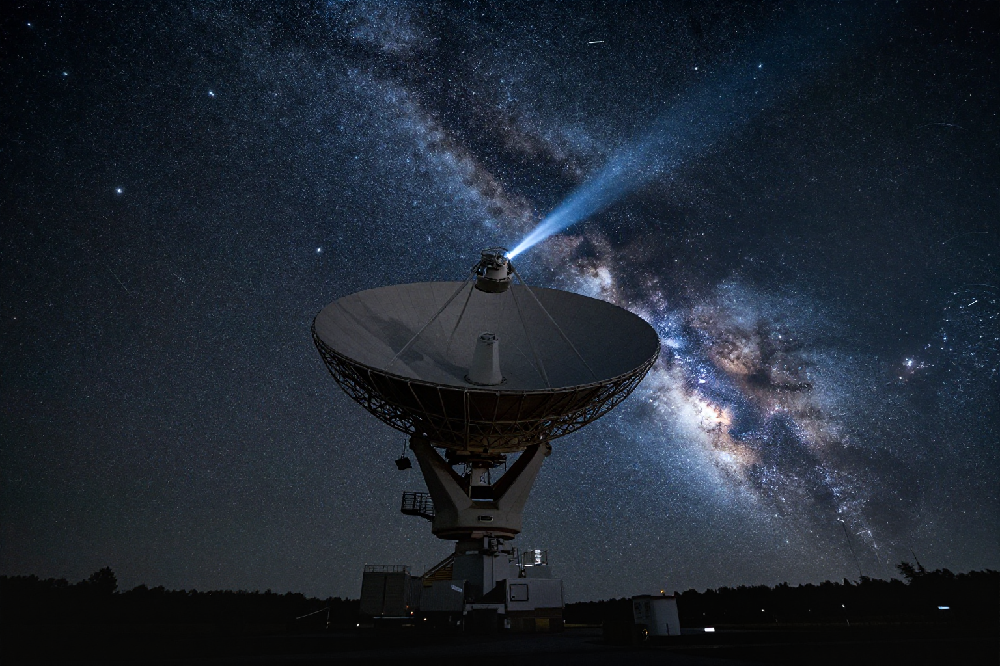

The Wow! Signal: Did We Receive a Message From Aliens in 1977?

It was the night of August 15, 1977, at 11:16 PM Eastern Daylight Time. A radio telescope in the farmland of central Ohio picked up something strange. It was a radio signal, strong and sharply tuned. It looked just like what scientists had said a message from another world might look like.
Nobody noticed it that night. An astronomer found it three days later, on a computer printout. He could only write one word in the margin: “Wow!”
The signal came in at a frequency of 1420.40575177 MHz. A frequency is the exact spot on the radio dial where a signal is heard. This one was almost exactly the hydrogen line. That is a frequency many scientists think is the most logical channel for talking across space. The signal lasted for exactly 72 seconds. That is the time expected when a fixed radio telescope listens to one spot as the Earth turns.
It was 30 times stronger than the usual background noise of deep space. It came from the direction of the constellation Sagittarius, near the crowded star fields at the center of our galaxy. And then it was never heard again, though some of the most powerful radio telescopes ever built searched for it for decades.
The Wow! Signal is still the strongest candidate ever found in SETI. SETI means the Search for Extraterrestrial Intelligence, the hunt for signals from alien civilizations. It remains one of the most tempting unsolved mysteries in science.
The signal was caught by the Big Ear radio telescope. It belonged to the Ohio State University Radio Observatory in Delaware, Ohio. John Kraus had the idea for it. He was a pioneering radio astronomer and a professor at Ohio State. He designed and built the telescope in the 1950s and 1960s.
By the 1970s, Big Ear was one of the longest-running SETI projects in the world. It scanned the sky for narrowband radio signals, meaning signals squeezed into a thin slice of the radio dial. Such signals might come from an intelligent civilization elsewhere in the galaxy.
The telescope’s big reflector could not move. It used the turning of the Earth to sweep across the sky. Each point stayed in view for about 72 seconds as it drifted past. Big Ear also had two feed horns, which are receiving antennas at the focus of the reflector. They looked at slightly different parts of the sky a few minutes apart.
This was a built-in check. A real signal from space should show up in both horns, one after the other. Radio interference from Earth would likely show up in only one.
On August 15, 1977, Big Ear was doing a routine scan. It was one of thousands of such scans over the years. The telescope’s computer printed the incoming data as a long line of characters. Each one showed the signal strength over a 12-second period.
The scale ran from 0 to 9 for weak signals. Then it went on with the letters A to Z for stronger ones. The letter “U” meant a signal about 30 times the background noise.
A few days later, Jerry R. Ehman was reading the printouts at his kitchen table. He was a volunteer astronomer. He had once worked at Ohio State as an assistant professor of electrical engineering and astronomy, until budget cuts ended his paid job. He saw something that made him stop.
The printout had a sequence of characters: “6EQUJ5.” The signal rose sharply from the background level, which was 6. It climbed through stronger levels, E, Q, and U. It peaked at “U,” the highest level the system could record. Then it fell back in the same smooth way, J and 5.
This slow rise and fall is just what you would expect from a source in space drifting through the telescope’s view as the Earth turned. Ehman was stunned. He grabbed a red pen and circled the sequence. In the margin he wrote “Wow!” It became one of the most famous notes in the history of science.
The signal was remarkable in many ways. Its frequency was very close to the hydrogen line. This is the natural radio signal from hydrogen atoms. Hydrogen is the most common element in the universe. In 1959, physicists Giuseppe Cocconi and Philip Morrison wrote a landmark paper in the journal Nature. They said this was the most logical frequency for talking between stars. Any advanced civilization would know it and see why it mattered.
The signal was also very narrow, about 10 kHz wide or less. Man-made transmissions are usually like that. Natural sources, such as pulsars, quasars, and gas clouds, make broad, spread-out radio noise. The 72-second length matched exactly what a fixed antenna would see from a single point in the sky. That showed the signal came from a specific direction.
But the signal appeared in only one of Big Ear’s two feed horns. That adds a puzzle that has never been fully solved.
The hydrogen line is at about 1420.40575177 MHz. Its wavelength is about 21 centimeters. People often call it the “watering hole” of the radio spectrum. That is because it sits in a quiet part of the spectrum, the full range of radio waves. At lower frequencies, there is noise from the galaxy. At higher ones, the air absorbs radio waves.
Cocconi and Morrison’s thinking was neat. Hydrogen is the most common element, and every astronomer knows its frequency. So any civilization with radio would know it too. It would be like a universal telephone number that any intelligent species would think to check.
Today the hydrogen line is protected by international agreement for radio astronomy. Transmitters on Earth may not broadcast at or near it. The Wow! Signal arrived right at this frequency. That is one of the strongest reasons to think it could be artificial. Natural sources do not usually make narrowband signals at this frequency with such strength and length.
The signal seemed to come from the direction of the constellation Sagittarius. It was near the star cluster M55, in the area of the Chi Sagittarii star group. That is in the general direction of the center of the Milky Way. This part of the sky is packed with stars. The galactic center holds billions of them in a small volume of space. So it is a promising place to look for signals.
In 2020, an amateur astronomer named Alberto Caballero used data from the European Space Agency’s Gaia space observatory. He searched for sunlike stars in the signal’s region. He found a candidate, called 2MASS 19281982-2640123. It lies about 1,800 light-years from Earth and could possibly have planets where life could live. That is interesting. But it is highly speculative. The signal’s true source has never been confirmed, and the signal has never been heard again from anywhere.
That is the most frustrating thing for scientists. Many follow-up searches have been done with ever more powerful telescopes over more than four decades. The signal has never come back. This matters a great deal. A key rule of science is that results must be repeatable. A signal that shows up once and never again cannot be confirmed, no matter how exciting it looks.
In 1987, astronomer Robert Gray used Big Ear itself to look at the same spot. He found nothing. In 1995 and 1996, Gray used the Very Large Array in New Mexico, one of the most powerful radio telescope groups in the world. He searched for long stretches and found nothing. In 1999, he used the 26-meter radio telescope of the University of Tasmania in Australia. Again he found nothing.
The Allen Telescope Array in California was built partly for SETI. It also searched without success. Each of these searches was more sensitive than Big Ear. So if the signal were something that lasts, it should have been found again.
Jerry Ehman himself was very careful. In interviews he said again and again that he could not confirm the signal came from beyond Earth. In 1994 he told the Cleveland Plain Dealer: “Even if it were intelligent beings sending a signal, they’d do it far more than once.” He went on: “We should have seen it again when we looked for it 50 times. Something suggests it was an Earth-bound signal that simply got reflected off a piece of space debris.”
Ehman stuck to the evidence and would not guess beyond it. That was a sharp contrast to the wild way popular media treated the signal.
Since 1977, many ideas have been offered that do not involve aliens. Radio interference from Earth was considered and mostly ruled out. Big Ear had filters made to reject signals from Earth. And the signal’s traits fit a source in space. A secret military satellite was also considered. But nobody has found any satellite program that could explain it.
A reflection off a piece of space debris is what Ehman himself liked best. It is possible but not proven. In 2016 and 2017, astronomer Antonio Paris suggested another idea. He said the signal might come from hydrogen gas around two comets, 266P/Christensen and P/2008 Y2 (Gibbs). They were near the signal’s position at the time.
But many experts have criticized this idea. Comets are not known to make strong, narrowband signals at 1420 MHz. And later looks at the same comets found no signal like the Wow! Signal. Most SETI researchers do not find the comet idea convincing. No explanation has been confirmed. The Wow! Signal is still truly unexplained.
In 2012, it was 35 years since the signal was found. The Arecibo Observatory in Puerto Rico sent a reply toward the spot where it came from. It was part of a public event organized by the National Geographic Channel. The message was sent from Arecibo’s 305-meter dish, which is 1,000 feet wide. It held about 10,000 Twitter messages from the public, plus video messages from celebrities and scientists.
The message was mostly symbolic. But it showed how important the Wow! Signal had become to people. The Arecibo Observatory itself was badly damaged and shut down in 2020. That was the end of an era for radio astronomy and SETI.
The Wow! Signal holds a special place in science. For a moment the universe seemed to whisper, and then it went quiet. The signal matched what scientists had predicted for a message from another world. It was narrow, at the hydrogen line, of the right length, and from a promising part of the sky.
Yet it has never been repeated, never confirmed, and never fully explained. All the rival ideas have weak spots, and none is accepted by everyone. The alien idea is exciting, but it has the same fatal flaw. A signal that appears once and never again cannot, by its nature, be confirmed.
Jerry Ehman spent the rest of his life warning people not to read too much into it. “I can speculate, too,” he said, “but there’s nothing to back it up.”
The Wow! Signal may have been the most important find in the history of SETI. Or it may have been a harmless glitch, a passing reflection, or a short event of no cosmic meaning. We do not know. Until the signal is heard again, we may never know. The universe has no duty to make itself understood.
References & Further Reading
📚 Recommended Reading: We Are Not Alone (on Amazon) — As an Amazon Associate, we earn from qualifying purchases.
Editorial note: The Wow! Signal is documented through the records of the Ohio State University Radio Observatory and decades of peer-reviewed research in radio astronomy and SETI. See our Editorial Policy.